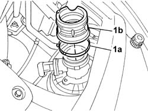

1048A35 HOSE FROM FLOW METER TO RESONATOR - R.R.
- Path
- Procedures > 10 ENGINE > 1048 ENGINE AIR SUPPLY CIRCUIT > 1048A VACUUM AIR CIRCUIT > 1048A35 HOSE FROM FLOW METER TO RESONATOR - R.R.
- Kind
- repair procedure (removal / refitting; the operation number is the code)
- Applies to
- engines: 2.4 20V, 3.0 V6, 3.2 V6; all production periods
- Interactive page
- https://sloeber94.github.io/elrnDB-lThss/en/#/93483
Applies to: engines: 2.4 20V; all production periods
 Removing
Removing
 Refitting
RefittingSee in Op. 7040D50 ENGINE COMPARTMENT UPPER SOUND INSULATION SHIELD - R.R.
See in Op. 1048A28 vacuum air circuit resonator pipe - r+r
See in Op. 1048A21 AIR INLET HOSE FROM INTAKE TO FILTER - R.R.
1. Remove the band (1a) and extract the hose (1b) connecting the flow meter to the resonator.

Applies to: engines: 2.4 20V; all production periods
Refitting
Removing- Position the hose on the flow meter and secure it using the band.
See in Op. 1048A21 AIR INLET HOSE FROM INTAKE TO FILTER - R.R.
See in Op. 1048A28 vacuum air circuit resonator pipe - r+r
See in Op. 7040D50 ENGINE COMPARTMENT UPPER SOUND INSULATION SHIELD - R.R.
Applies to: engines: 3.0 V6, 3.2 V6; all production periods
- Procedure not yet available
Topics linked from this page (3)
- 1048A21 AIR INLET HOSE FROM INTAKE TO FILTER - R.R.
- 1048A28 vacuum air circuit resonator pipe - r+r
- 7040D50 ENGINE COMPARTMENT UPPER SOUND INSULATION SHIELD - R.R.
Topics that link to this page (9)
- 1056B10 AIR FLOW METER - R.R.
- 1088C36 THERMOSTAT MOUNTING - R.R.
- 1088D24 RIGID PIPE for coolant inlet to water pump - R&R
- 1088D63 Alternator side flexible hose for alternator coolant return pipe - R.R.
- 1088D64 Rigid alternator rigid coolant return pipe - R.R.
- 1088D65 Flexible HOSE between thermostat and alternator coolant rigid return pipe - R.R.
- 1088D68 Connectors on coolant circuit alternator - R.R. or replace gasket
- 5510C46 FLYWHEEL SIDE DETONATION SENSOR - R.R.
- 5510C48 TIMING SIDE DETONATION SENSOR - R.R.